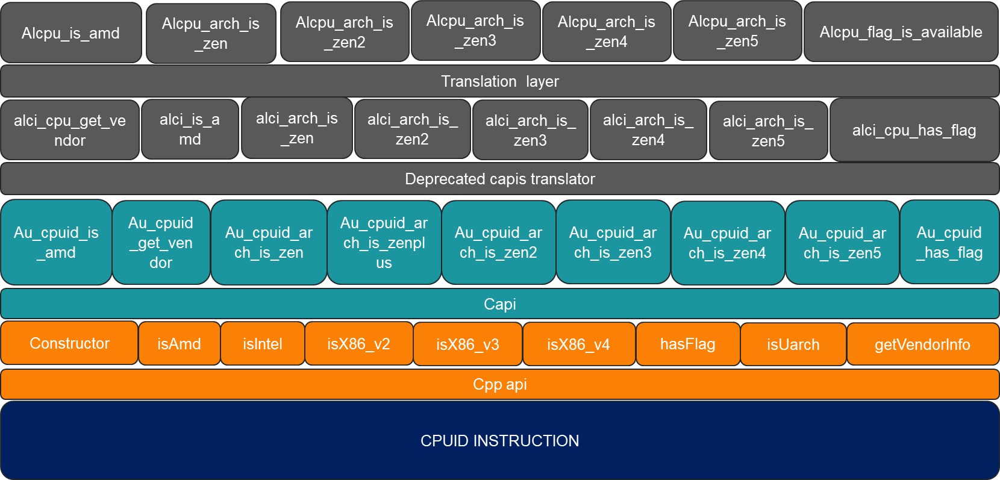

Details
AOCL-UTILS
An effort to factor out common functionality across libraries.
Table of Contents
Project structure
The project is structured as follows:
Library: This directory contains the source code for the project.SDK: The release folder.Tests: This directory contains the necessary unit tests for the project.Tools: The necessary tools to work with the project.
BUILD AND INSTALL
Dependencies
Getting started
Same commands can be used on both Linux and Windows. The only difference is the environment setup. The default compiler and generator used will be the platform defaults.
For specific compiler and generator, use the following command:
cmake -DCMAKE_CXX_COMPILER=clang++ -DCMAKE_C_COMPILER=clang -G "Unix Makefiles" ..
Note: Replace the compiler(clang) and generator(Unix Makefiles) with the required one.
Refer supported package matrix document for the supported compiler and generator.
Checkout the latest code
git clone
cd aocl-utils
Configure
cmake -B default -DCMAKE_INSTALL_PREFIX=install_dir
Build
cmake --build default --config release -j
Install
cmake --install default --config release
This command creates
The necessary header files in the <Install Path>/includefolder
static and dynamic library files corresponding to modules core(au_core) and cpuid(au_cpuid) Link with these libraries based on the functionality required. Note:
This command creates lib/lib64 directory for the binaries. To have custom library path, use CMAKE_INSTALL_LIBDIR.
Rightly update the include path and library path in the project to link with the installed libraries. or use LD_LIBRARY_PATH to point to the installed library path.(PATH environment variable in windows)
Refer to the API documentation and examples in the Example folder to understand how to link and use the modules.
Important:
1. Most of the CPUID APIs(Along with the headers) from 4.2 release is deprecated and will be removed in the future release. Refer to the API documentation for the new APIs.
2. The old APIs can be enabled using AU_ENABLE_OLD_API=ON during build, otherwise utils build will throw deprecated warnings.
3. The aoclutils module is a combination of au_core and au_cpuid modules.
4. The aoclutils module is the default module to be used for all the functionalities.
Current API Stack
 Note
The APIs in the grey box are deprecated and will be removed in the future release.
X86Cpu.hh(CPP)/cpuid.h(C) is the new header file that contains the new APIs.
Testing
Build with AU_BUILD_TESTS=ON to run the tests.
ctest -C release
qemu-x86_64 is a dependency for running tests. Install it using the following command:
sudo apt-get install qemu-user # For Ubuntu
sudo dnf install qemu-user # For Fedora/RHEL/CentOS
# qemu tests are disable on windows as qemu-user is not available on windows
List of build options
Build FLags Description Default Alternate Values
--------------------------------------------------------------------------------------------------
AU_BUILD_DOCS Generate Docs during build OFF ON
AU_BUILD_EXAMPLES Build examples OFF ON
AU_BUILD_TESTS Build tests OFF ON
AU_BUILD_TYPE Build type Release Debug, Developer
AU_ENABLE_OLD_API Enable OLD alci_* APIs OFF ON Use to avoid deprecation warnings
List of functionalities provided by each utils modules
au_core (internal)
thread pinning
au_cpuid
cpu flag detection
cpu architecture detection.
aoclutils
All features of au_cpuid and au_core combined.
Note: Refer to API documentation and Examples in Examples folder to understand how to link and use the modules.